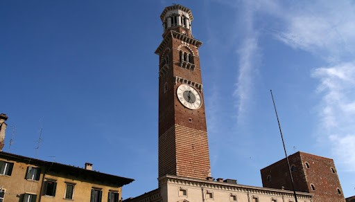
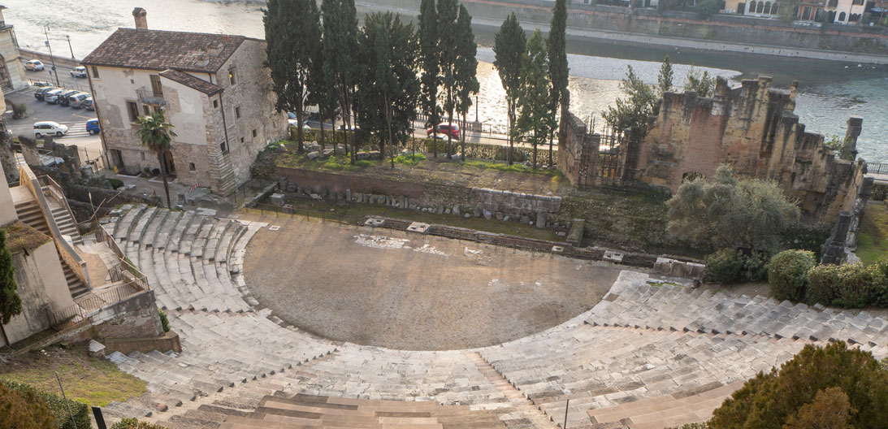
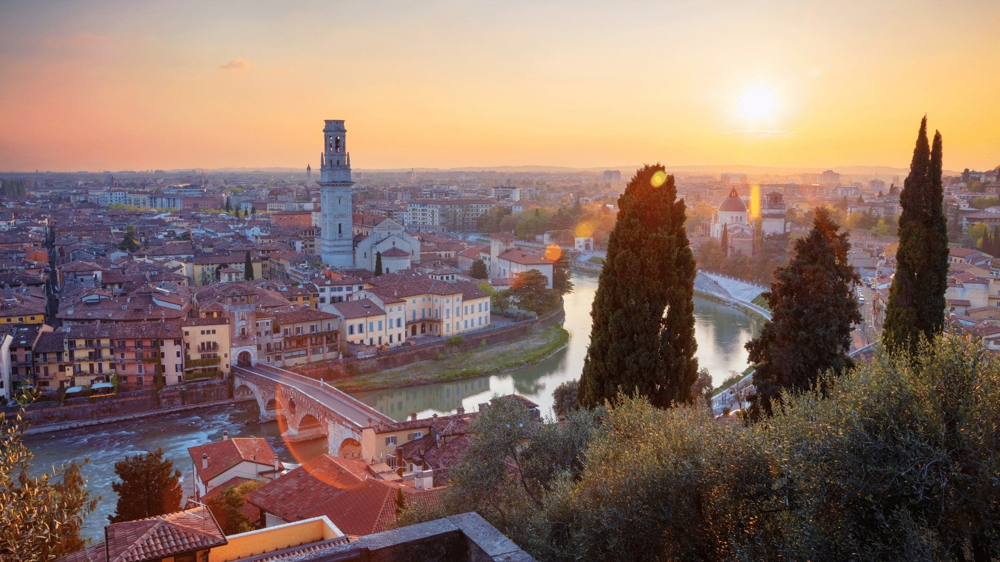
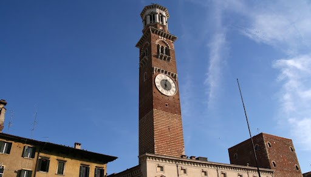
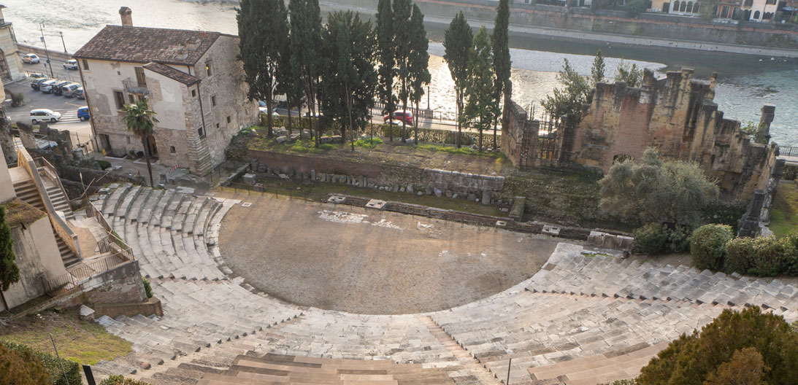
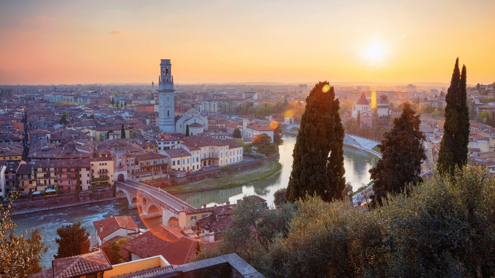
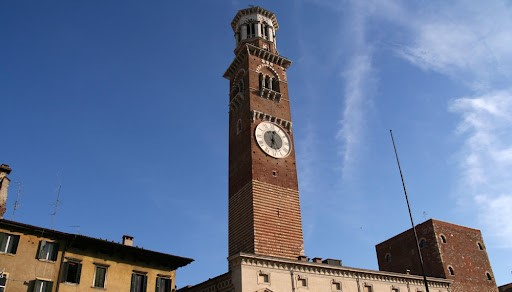
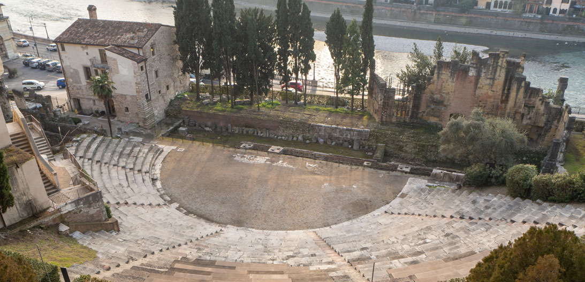
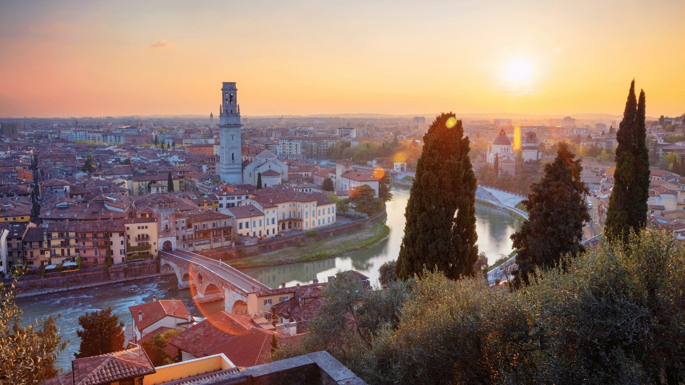
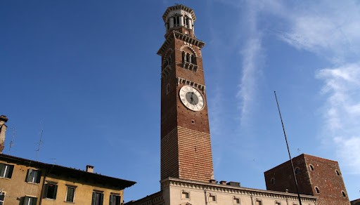
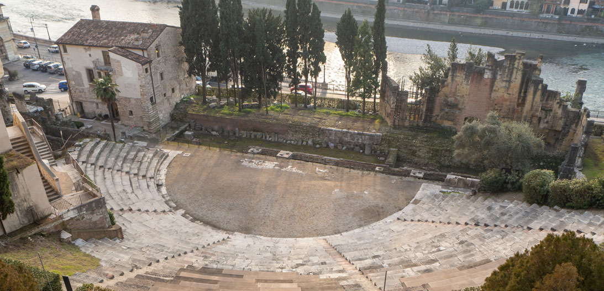
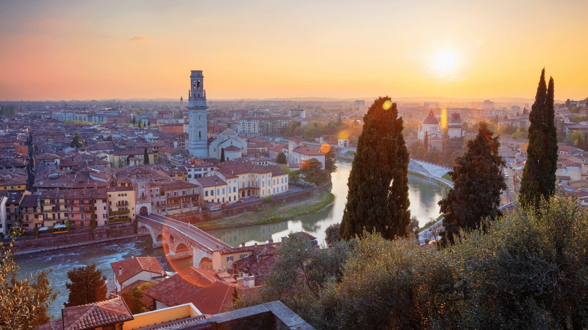
Verona sorse sul colle San Pietro, grazie alle condizioni naturali favorevoli:
la collina era facilmente difendibile da attacchi esterni, ciò dovuto in parte anche alla presenza del fiume Adige
e costituiva, inoltre, la principale via di comunicazione con le popolazioni del Nord Europa.
L'area in cui oggi sorge la città è stata abitata fin dal neolitico, in quanto era una zona di passaggio, soprattutto delle comunicazioni, tra la zona orientale e quella occidentale della Pianura padano-veneta a nord del fiume Po.
Verona è una città ricca di storia e cultura, dichiarata Patrimonio Mondiale dell'UNESCO negli anni 2000,
ed è conosciuta soprattutto per la sua architettura, le sue peculiarità urbanistiche e per il patrimonio artistico e culturale.
Si possono infatti trovare elementi dei diversi periodi storici, tra quali i più noti sono: romano, romanico, gotico e rinascimentale.
ESEMPIO